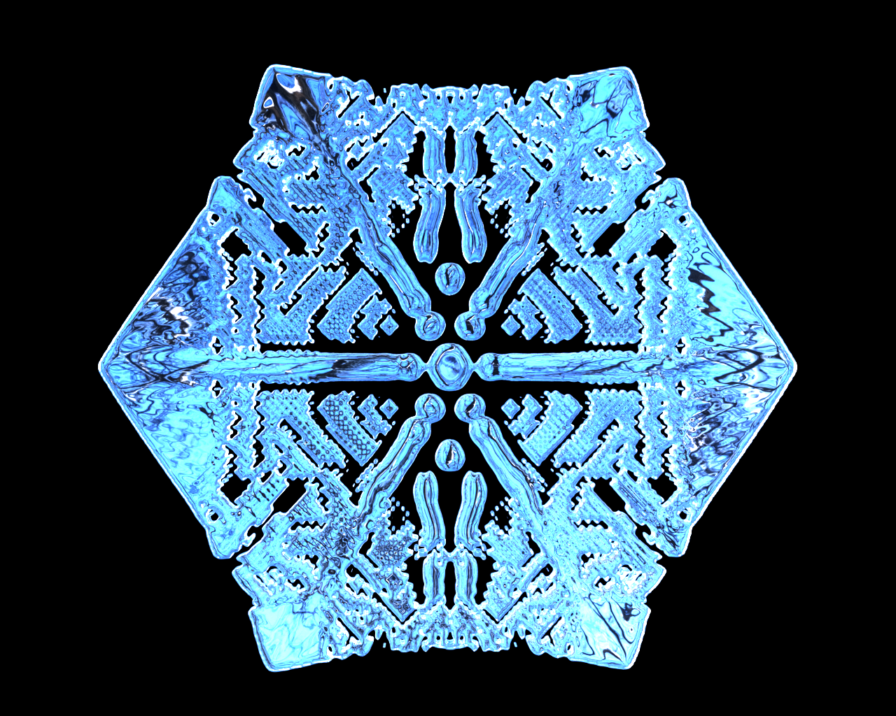

|

|
|
Abstract:
We introduce the C-F diffusion model [Andreson and Tamma 2006; Xue et al. 2018] to computer graphics for diffusion-driven problems that has several attractive properties: (a) it fundamentally explains diffusion from the perspective of the non-equilibrium statistical mechanical Boltzmann Transport Equation, (b) it allows for a finite propagation speed for diffusion, in contrast to the widely employed Fick's/Fourier's law, and (c) it can capture some of the most characteristic visual aspects of diffusion-driven physics, such as hydrogel swelling, limited diffusive domain for smoke flow, snowflake and dendrite formation, that span from Fourier-type to non-Fourier-type diffusive phenomena. We propose a unified convection-diffusion formulation using this model that treats both the diffusive quantity and its associated flux as the primary unknowns, and that recovers the traditional Fourier-type diffusion as a limiting case. We design a novel semi-implicit discretization for this formulation on staggered MAC grids and a geometric Multigrid-preconditioned Conjugate Gradients solver for efficient numerical solution. To highlight the efficacy of our method, we demonstrate end-to-end examples of elastic porous media simulated with the Material Point Method (MPM), and diffusion-driven Eulerian incompressible fluids.
|

![[PHOTO]](../../images/knight_small.png)